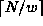
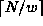
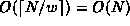
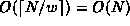

Data Structures and Algorithms
with Object-Oriented Design Patterns in Java
Data Structures and Algorithms
with Object-Oriented Design Patterns in Java
Program  defines the constructor
for the SetAsBitVector
class as well as the three basic operations--insert, isMember, and withdraw.
The constructor takes a single argument
defines the constructor
for the SetAsBitVector
class as well as the three basic operations--insert, isMember, and withdraw.
The constructor takes a single argument
 ,
which specifies the universe and, consequently,
the number of bits needed in the bit array.
The constructor creates an array of ints of length ,
where
,
which specifies the universe and, consequently,
the number of bits needed in the bit array.
The constructor creates an array of ints of length ,
where  is the number of bits in an int,
and sets the elements of the array to zero.
The running time of the constructor is .
is the number of bits in an int,
and sets the elements of the array to zero.
The running time of the constructor is .
Program: SetAsBitVector class constructor, insert, withdraw, and isMember methods.
To insert an item into the set,
we need to change the appropriate bit in the array of bits to one.
The bit of the bit array
is bit of word .
Thus, the insert method is implemented using
a bitwise or operation to change the bit to one
as shown in Program .
Even though it is slightly more complicated than the corresponding operation
for the SetAsArray class,
the running time for this operation is still O(1).
Since  is a power of two,
it is possible to replace the division and modulo operations,
/ and %,
with shifts and masks like this:
is a power of two,
it is possible to replace the division and modulo operations,
/ and %,
with shifts and masks like this:
vector [item >> shift] |= 1 << (item & mask);for a suitable definition of the constants shift and mask. Depending on the compiler and machine architecture, doing so may improve the performance of the insert operation by a constant factor. Of course, its asymptotic performance is still O(1).
To withdraw an item from the set,
we need to clear the appropriate bit in the array of bits
and to test if an item is a member of the set,
we test the corresponding bit.
The isMember and withdraw methods in Program
show how this can be done.
Like insert,
both these methods have constant worst-case running times.
 Copyright © 1998 by Bruno R. Preiss, P.Eng. All rights reserved.
Copyright © 1998 by Bruno R. Preiss, P.Eng. All rights reserved.